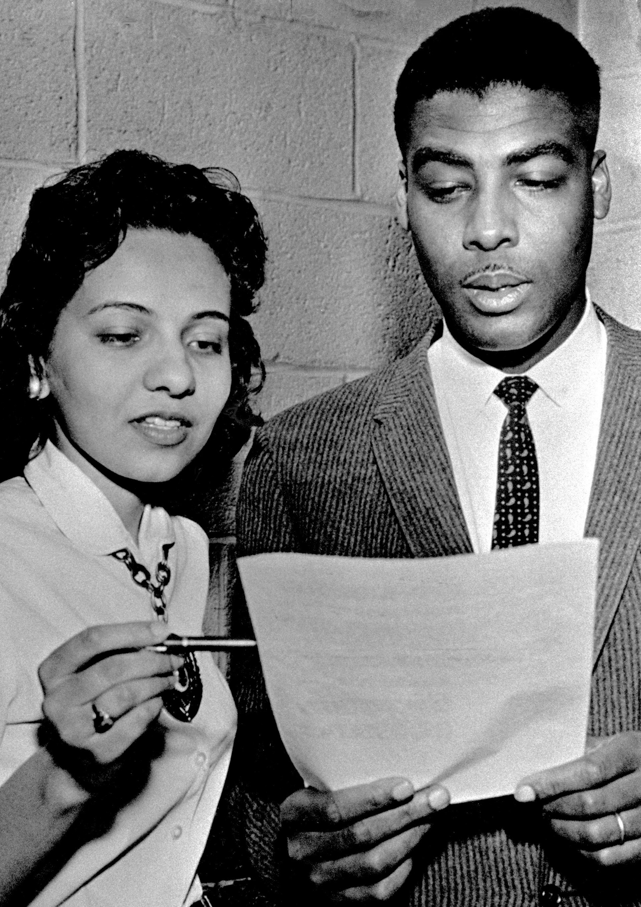
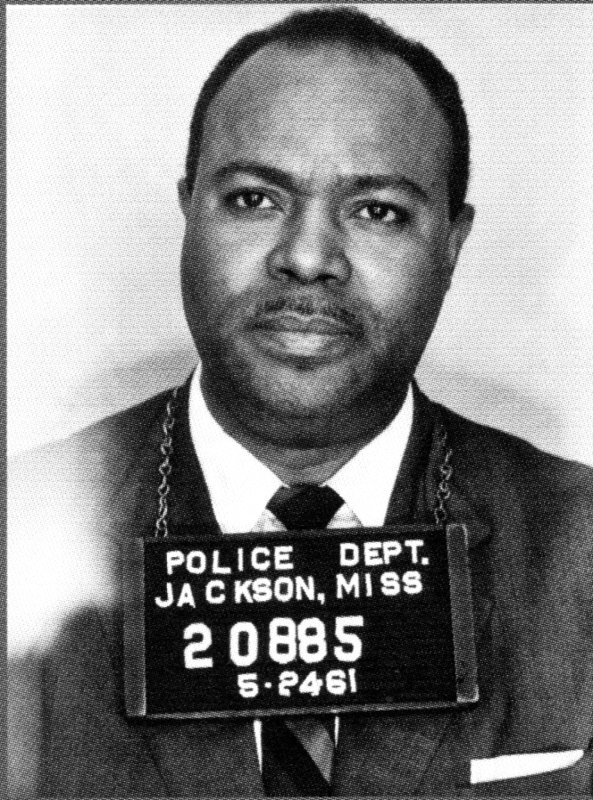

Directions: Work through the five stations in order. Each station holds one record from 1960 to 1962. For each station, state the crisis the protesters tried to create, the answer it drew, and whether the federal government was moved. At the end, judge which record shows the tactic working and which shows it failing, and why.
Source: Summary prepared for this lesson from the standard historical record. This station is a labeled summary, not a transcription of a 1960 document. No public domain photograph of the February 1960 Greensboro sit-in itself is available; the famous newspaper photographs of the counter are press photographs under copyright, so this station carries no image.
| Date | Record |
|---|---|
| February 1, 1960 | Four freshmen at North Carolina Agricultural and Technical College, Joseph McNeil, Ezell Blair Jr., Franklin McCain, and David Richmond, buy small items at the Greensboro Woolworth, keep their receipts, and sit at the lunch counter reserved for white customers. Refused service, they stay until the store closes |
| February 2 to 5, 1960 | The four return with more students each day; within a week, hundreds of students are sitting in at Greensboro stores |
| End of 1960 | Students have sat in in more than a hundred southern cities |
| July 25, 1960 | Woolworth serves its first Black customers at the Greensboro counter |
The four students had no national organization behind them and no budget. What they had was a tactic that any student in any city could copy the next morning.
State the crisis the four students tried to create. Name the choice they forced on the store and on the city.
State the answer the sit-in drew, and whether the federal government was moved. Use the July 25 line of the record.
Source: Summary prepared for this lesson from the standard historical record of James Lawson's Nashville workshops and the Nashville sit-ins. This station is a labeled summary, not a transcription of a workshop document. Photograph by Gerald Holly, staff photographer for The Tennessean, April 9, 1960; public domain as stated on the Wikimedia Commons file page (copyright not renewed).

From the fall of 1959, the Reverend James Lawson ran workshops for Nashville students from Fisk University, Tennessee State, Meharry Medical College, and American Baptist College. Students practiced the discipline of nonviolence on each other: how to sit at a counter while insults were shouted, how to shield the head when pulled from a stool, how to refuse to strike back, and how to dress, speak, and carry themselves so that the protest, not the protesters, stayed in question. When Nashville students sat in during February 1960, they were beaten and arrested on February 27, and they filled the jails rather than posting bail. On April 19, after a bomb wrecked the home of their lawyer, Z. Alexander Looby, thousands marched to the courthouse, where Diane Nash asked Mayor Ben West whether he believed it was wrong to discriminate against a person by the color of his skin. West answered that it was wrong and agreed the counters should open. Nashville desegregated its lunch counters on May 10, 1960, the first major southern city to do so.
State the crisis the Nashville students tried to create, and name the preparation that let them sustain it after February 27.
State the answer it drew, and whether the federal government was moved. Name who gave the answer and what changed on May 10.
Source: Boynton v. Virginia, 364 U.S. 454 (1960), opinion of the Court, as printed in the United States Reports and reproduced by GovInfo. The holding is quoted with cuts, marked by ellipses. The ride record that follows is a labeled summary prepared for this lesson from the standard historical record. Photograph: Jackson, Mississippi police mug shot of James Farmer, national director of CORE, May 24, 1961; public domain as stated on the Wikimedia Commons file page.

"when a bus carrier has volunteered to make terminal and restaurant facilities and services available to its interstate passengers as a regular part of their transportation, and the terminal and restaurant have acquiesced and cooperated in this undertaking, the terminal and restaurant must perform these services without discriminations prohibited by the Act."
| Date | Record |
|---|---|
| May 4, 1961 | Thirteen riders, seven Black and six white, organized by the Congress of Racial Equality, leave Washington on Greyhound and Trailways buses to test the Boynton decision in the South |
| May 14, 1961 | Outside Anniston, Alabama, a mob firebombs the Greyhound bus and beats the escaping riders; in Birmingham, riders are beaten where police have been arranged to be absent |
| May 20 to 24, 1961 | Riders are beaten at the Montgomery bus station; Nashville students replace the injured, ride to Jackson, Mississippi, and are arrested and sent to Parchman prison |
| Summer 1961 | More than four hundred riders, most of them students, ride into the South |
State the crisis the riders tried to create. Use the Boynton holding: what right already existed on paper, and what did the riders force the South and Washington to do about it?
State the answer the rides drew in Alabama and Mississippi, in plain facts, and whether the federal government had yet been moved by May 24.
Source: Interstate Commerce Commission, regulations governing discrimination in the operations of interstate motor carriers of passengers, adopted September 22, 1961, effective November 1, 1961, quoted from the regulations as codified at Title 49, Code of Federal Regulations, Part 374, via GovInfo and the United States Department of Transportation. Attorney General Robert Kennedy had petitioned the Commission for the regulations on May 29, 1961.
"No motor common carrier of passengers ... shall operate a motor vehicle in interstate or foreign commerce on which the seating of passengers is based upon race, color, creed, or national origin."
Every carrier was also required to print on every ticket it sold a plainly legible notice: "Seating aboard vehicles operated in interstate or foreign commerce is without regard to race, color, creed, or national origin." Terminal facilities used by interstate carriers had to display the regulations and could not be operated on a segregated basis.
State what this order changed that Boynton, at Station 3, had not by itself changed. Name the enforcement machinery the order added.
State whether the federal government was moved at this station, and name the protest and the federal official whose petition stand behind the order.
Source: Summary prepared for this lesson from the standard historical record. This station is a labeled summary, not a transcription of a document.
| Date | Record |
|---|---|
| Fall 1961 | SNCC workers Charles Sherrod and Cordell Reagon organize in Albany, Georgia; local groups join in the Albany Movement |
| December 1961 | Mass marches fill Albany's jails; Martin Luther King Jr. is arrested with hundreds of demonstrators |
| 1961 to 1962 | Police Chief Laurie Pritchett orders his officers to arrest demonstrators without violence before cameras and borrows jail space from surrounding counties; more than a thousand people are arrested |
| August 10, 1962 | King, jailed and then released against his will when his fine is paid by another person, leaves Albany without a desegregation agreement |
Pritchett had studied the movement's books and speeches. He understood that the movement's protests worked by producing a crisis the federal government could not ignore, and he set out to give it no crisis to work with.
State the crisis the Albany Movement tried to create, in the terms the earlier stations of this file establish.
State the answer it drew and whether the federal government was moved. Name the two parts of Pritchett's method.
Five records stand in the file: the Greensboro sit-in, the Nashville workshops, the Freedom Rides, the ICC order, and Albany. Choose the one record you would defend as showing the students' tactic working at its strongest, and the one record that shows it failing. A strong verdict explains the mechanism in both cases: what crisis was created, what answer it drew, and what the federal government did or did not do.
Work in the file's own terms for both records. A record shows the tactic working when the crisis it created could not be absorbed, answered quietly, or waited out by the power it was aimed at. A record shows the tactic failing when the answer it drew left every relevant power free to do nothing. Name dates. A verdict that praises courage without naming a mechanism has not answered the question this file asks.
Write your verdict in a paragraph. Name your working record and your failing record, give the crisis, the answer, and the federal result for each, and state the rule the two records together prove.
Crisis attempted. Four students forced the store and the city to choose between serving Black customers at the counter and answering a polite, lawful-looking protest with force or public refusal, day after day, before widening crowds. The crisis was economic and reputational, and it could be reproduced in any city at no cost.
Answer drawn, and the federal government. The answer was local, not federal. Students returned in growing numbers, and Woolworth desegregated the Greensboro counter on July 25, 1960. Washington was not moved at this station; no federal action appears in the record, which is itself a fact students should state.
Crisis attempted. Trained students created a disciplined, sustained confrontation at the counters of a major city, and, after the February 27 arrests, a jail filling crisis, refusing bail so the city had to hold, feed, and answer for hundreds of orderly prisoners.
Answer drawn, and the federal government. The answer came from the city, not Washington. After the Looby bombing and the silent courthouse march, Diane Nash drew Mayor Ben West's public answer that discrimination by skin color was wrong, and Nashville desegregated its lunch counters on May 10, 1960, the first major southern city to do so. The federal government was not moved; it was not needed, because the crisis was aimed at, and answered by, city power.
Crisis attempted. Boynton had already declared the right: terminal and restaurant services for interstate passengers had to be performed without the discriminations the Interstate Commerce Act prohibited. The riders forced the question of enforcement. By using the white waiting rooms, restrooms, and counters, they made southern officials and mobs either honor a federal right or violate it in front of the nation, and they made Washington choose between enforcing its own law and watching it be beaten on camera.
Answer drawn, and the federal government. Alabama answered with violence, a bus firebombed outside Anniston on May 14, 1961, riders beaten there and in Birmingham where police were arranged to be absent, and a further beating in Montgomery. Mississippi answered with arrest and Parchman prison. By May 24 the federal government had sent marshals to Montgomery but had not yet enforced Boynton as a general rule; the general enforcement comes at Station 4, and students should not credit it early.
What the order added. Boynton declared a right in a single case, enforced by whoever could sue. The 1961 regulations made the right a standing rule of the industry: no carrier could seat passengers by race, every ticket had to print the notice that seating is without regard to race, color, creed, or national origin, and terminals had to post the regulations and operate without segregation, with the Commission behind them.
Was the federal government moved? Yes, completely, at this station. The Freedom Rides created the crisis, and Attorney General Robert Kennedy's petition of May 29, 1961, carried it into the Commission, which adopted the regulations on September 22, 1961, effective November 1, 1961.
Crisis attempted. The Albany Movement tried to create the same crisis the rides had created: mass arrests, filled jails, and national attention that would force the city to negotiate and Washington to enforce federal rights.
Answer drawn, and the federal government. Chief Laurie Pritchett's method had two parts: his officers arrested demonstrators politely, without the violence that made national news, and he borrowed jail space from surrounding counties so the jails never filled and the pressure of overflowing cells never built. More than a thousand arrests produced no televised outrage and no federal intervention. King left Albany on August 10, 1962, without a desegregation agreement. The federal government was not moved.
Full credit verdicts name one working record and one failing record and explain the mechanism in both. A Freedom Rides and ICC pairing argues that the rides created a crisis on ground where a federal right already existed, so Washington could be forced to enforce its own law, and the order of September 1961 followed; it must answer Greensboro or Nashville, where local answers came faster and cheaper. A Nashville verdict argues that training and jail filling won a major city in ten weeks without federal help; it must answer the rides, which reached what no city campaign could reach, the interstate system itself. Albany is the sound failing record in nearly every full credit verdict: Pritchett's polite arrests and borrowed jail space are the documented mechanism of the failure. A verdict that calls Albany a failure of courage rather than of mechanism earns partial credit, because the record shows more than a thousand arrests. Verdicts that list events without a crisis, an answer, and a federal result earn partial credit.